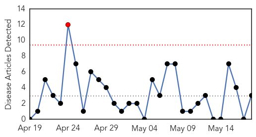
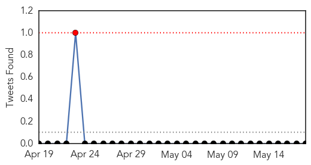

Hepatitis
30-Day Web Trend
1 alerts, 0 warnings

30-Day Twitter Trend
0 alerts, 0 warnings

Article Locations
Article Confidences
Top Articles:
Top Tweets:
-
No tweets found for May 18, 2015
Cholera
30-Day Web Trend
2 alerts, 1 warnings

30-Day Twitter Trend
0 alerts, 0 warnings

Article Locations

Article Confidences

Top Articles:
- 0.996
- Beyonce Assists United Nations Humanitarian Mission In Wyclef’s country, Haiti
- 0.996
- Fear grows as cholera cases soar - Kenya
- 0.969
- Kenya: Fear grows as cholera cases soar
- 0.918
- Tanzania confirms cholera at Burundian refugee camp
- 0.901
- Tanzania confirms cholera at Burundian refugee camp
- 0.780
- Cholera Outbreak At Burundi Refugee Camp In Tanzania
- 0.772
- Cholera outbreak in Tanzania refugee camp as thousand flee fearing persecution
- 0.716
- Burundi refugees' deaths linked to diarrhea outbreak in Tanzania
- 0.683
- Burundi: UNHCR regional update: Burundi situation No. 0012 (as of 17 May 2015)
- 0.663
- Can Haiti Get a Simple Apology Nepalese Officials?
- 0.647
- Tanzania confirms cholera at Burundian refugee camp
- 0.579
- In Nepal, a race against the clock to deliver aid
- 0.561
- Urgent efforts underway as seven Burundi refugees die in diarrhoea outbreak at Tanzania camp
- 0.543
- Burundian Refugees in Tanzania Dying of Disease
- 0.530
- 7 Burundi refugees die of 'severe diarrhea' in Tanzania
Top Tweets:
-
No tweets found for May 18, 2015